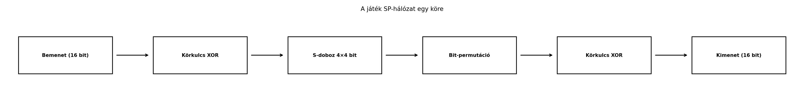

Az előző alfejezetben láttuk, hogy a tökéletes titkosság a gyakorlatban elérhetetlen, ezért a modern rejtjelek számítási biztonságra épülnek. Ha azonban a rejtjel pusztán egy táblázat, akkor a nyílt szöveg és a rejtett szöveg közötti statisztikai kapcsolat könnyen kihasználható. A klasszikus rejtjelek sorra megbuktak: a helyettesítéses rejtjel megőrizte a betűgyakoriságot, a transzpozíció önmagában gyenge volt, a Hill-rejtjel pedig azért volt feltörhető, mert lineáris leképezés volt. Claude Shannon 1949-es, Communication Theory of Secrecy Systems című munkájában két olyan tervezési elvet fogalmazott meg, amelyek a mai blokkrejtjelek, például az AES vagy a PRESENT alapját is adják: konfúzió és diffúzió. Ebben az alfejezetben felépítünk egy 16 bites játék SP-hálózatot, megmérjük rajta a lavinahatást, és megértjük, miért van szükség nemlineáris S-dobozra.
A 16 bites játék SP-hálózat (substitution–permutation network, SPN) a következőképpen képzelhető el. A bemenetet négy darab 4 bites nibble-re bontjuk. Minden nibble-re egy 4 bites, nemlineáris S-dobozt alkalmazunk, majd a 16 bitet egy bit-permutációval szétkeverjük. Végül a körkulcsot XOR-oljuk az állapothoz. Ezt a kört háromszor ismételjük.

Ha a bemenet egyetlen bitjét megváltoztatjuk, a körök során a változás előbb egy S-doboz kimenetére hat, majd a permutáció elosztja azt a többi nibble között. Három kör után a kimeneti bitek átlagosan fele megváltozik. Ezt mérjük majd meg.
Definíció. Egy rejtjel konfúziója (confusion) azt jelenti, hogy a kulcs és a rejtett szöveg közötti statisztikai kapcsolat bonyolult és nemlineáris. A konfúzió tipikus eszköze a nemlineáris S-doboz.
Definíció. A diffúzió (diffusion) a nyílt szöveg redundanciájának szétterítése a rejtett szövegben: egy bemeneti bit megváltozása sok kimeneti bitre hasson. A diffúzió tipikus eszköze a permutáció vagy egy lineáris transzformáció.
Definíció. Termékrejtjelnek (product cipher) nevezzük több, külön-külön gyenge, egyszerű transzformáció – például S-doboz, permutáció, kulcs-XOR – egymás utáni kompozícióját. Ha ugyanazt a szerkezetet többször alkalmazzuk, iterált körökről beszélünk.
Definíció. SP-hálózatnak (substitution–permutation network, SPN) nevezzük azt a termékrejtjelet, amely az állapotot szimbólumokra bontja, szimbólumonként nemlineáris S-dobozt alkalmaz, majd egy diffúziós réteget (például bit-permutációt vagy lineáris keverést) használ, és végül kulcsot XOR-ol az állapothoz.
Definíció. A lavinahatás (avalanche effect) azt jelenti, hogy egyetlen bemeneti bit megváltozása a kimeneti bitek átlagosan felét megváltoztatja. A szigorú lavinakritérium (strict avalanche criterion, SAC) ennél erősebb: minden bemeneti bit megváltoztatásakor minden kimeneti bit pontosan valószínűséggel változik, azaz minden bitpozícióra, ahol az -edik egységvektor, pedig az transzformáció -edik kimeneti bitje.
Továbbvitt eredmény. A játék SP-hálózatot a Differenciális kriptanalízis és a Lineáris kriptanalízis alfejezetben elemezzük majd. A lavinahatás fogalmát az Az AES felépítése és a A hash-függvény és biztonsági tulajdonságai alfejezet is használja. A konfúzió és diffúzió elvét a A Feistel-hálózat és a DES, valamint az Az AES felépítése alfejezet mélyíti el.
A 16 bites blokkra épülő játék SPN paraméterei:
0xC, 0x5, 0x6, 0xB, 0x9, 0x0, 0xA, 0xD, 0x3, 0xE, 0xF, 0x8, 0x4, 0x7, 0x1, 0x2
azaz
,
,
…,
.P = [0, 4, 8, 12, 1, 5, 9, 13, 2, 6, 10, 14, 3, 7, 11, 15].Algoritmus (játék SPN-titkosítás).
A kódot a Python-illusztrációban adjuk meg.
Vegyük a körkulcsot és a bemenetet. Az első XOR: A négy nibble: , , , . A PRESENT S-doboz szerint: így az S-doboz után az állapot .
Ha a állapot bitjeit a permutáció szerint áthelyezzük, a kimeneti bit a bemeneti bit értékét kapja. A keletkező 16 bites érték . (A levezetés lépésről lépésre elvégezhető: például a 7. kimeneti bit a 13. bemeneti bitet kapja, ami ; a 3. kimeneti bit a 12. bemeneti bitet, ami .)
Ez a példa jól mutatja, hogy a bit-permutáció valóban szétkeveri a nibble-eket: az S-doboz után a nibble bitjei nem maradnak együtt, hanem a permutáció a különböző nibble-ekből kever új csoportokat.
Az alábbi ábra a kör adatútját bitszinten mutatja (a 8.4.7 kódjával számolva), alul pedig azt, hogyan terjed egyetlen bemeneti bit megfordítása három körön.
Ellenpélda. Tegyük fel, hogy az S-doboz lineáris, például minden nibble-re. Ekkor az S-doboz bitenként lineáris, a permutáció lineáris, a kulcs-XOR pedig affin. Így az egész SP-hálózat affin leképezés a 16 bites bemeneten, és a Hill-rejtjel sorsára jut: ismert nyílt-rejtett szöveg párokból lineáris egyenletrendszerrel a teljes transzformáció meghatározható. Ez az oka annak, hogy a konfúziót nemlineáris S-doboznak kell biztosítania.
A lineáris rejtjelek, mint a Hill-rejtjel, a következő támadással szemben védtelenek. Tegyük fel, hogy az titkosítás lineáris, azaz ahol egy -es invertálható mátrix a bitek felett. Ha a támadó ismer darab független nyílt-rejtett szöveg párt, akkor a egyenletek lineáris rendszert alkotnak, amelyből meghatározható, és így a kulcs (vagy azzal egyenértékű transzformáció) feltörhető. Ha a rejtjel affin, azaz , akkor pár elegendő. A nemlineáris S-doboz éppen azért kell, hogy az ilyen lineáris algebrai támadás ne működjön: az S-doboz bitenkénti nemlineáris leképezés, ezért a teljes hálózat semmilyen affin modellben nem írható le.
Támadás. Ha a játék SPN-ben az S-dobozt lineárisra cseréljük, akkor a teljes hálózat affin. Egy támadó 17 ismert nyílt-rejtett szöveg párból lineáris egyenletrendszert állít fel, és meghatározza a leképezést. A helyes S-doboz megválasztása tehát nem kényelmi kérdés, hanem a konfúzió alapfeltétele.
Az alábbi oktatási implementáció a játék SPN-t és a lavinahatás mérését mutatja be. A kulcs rögzített tesztvektor, kizárólag demonstrációs célra.
# OKTATÁSI CÉLRA – NEM ÉLES HASZNÁLATRA
SBOX = [0xC, 0x5, 0x6, 0xB, 0x9, 0x0, 0xA, 0xD,
0x3, 0xE, 0xF, 0x8, 0x4, 0x7, 0x1, 0x2]
def sub_nibbles(x):
return ((SBOX[(x >> 12) & 0xF] << 12) |
(SBOX[(x >> 8) & 0xF] << 8) |
(SBOX[(x >> 4) & 0xF] << 4) |
(SBOX[x & 0xF]))
P = [0, 4, 8, 12, 1, 5, 9, 13, 2, 6, 10, 14, 3, 7, 11, 15]
def permute_bits(x):
y = 0
for dst, src in enumerate(P):
if (x >> src) & 1:
y |= 1 << dst
return y
def rotl(x, n):
return ((x << n) | (x >> (16 - n))) & 0xFFFF
def spn_round(x, k):
return permute_bits(sub_nibbles(x)) ^ k
def spn_encrypt(x, K):
Ks = [K, rotl(K, 5), rotl(K, 11), rotl(K, 13)]
y = x ^ Ks[0]
for r in range(3):
y = spn_round(y, Ks[r + 1])
return y
# Tesztvektor – csak demonstrációra
x = 0x1A2B
K = 0x3A7C
y = spn_encrypt(x, K)
print(f"x = {x:04X}, y = {y:04X}")
def hamming(a, b):
return (a ^ b).bit_count()
flips = [hamming(spn_encrypt(x, K), spn_encrypt(x ^ (1 << i), K))
for i in range(16)]
print("Hamming-távolságok:", flips)
print("Átlag:", sum(flips) / len(flips))Várt kimenet (a kód determinisztikus, Python 3-mal futtatva):
x = 1A2B, y = 9FA5
Hamming-távolságok: [12, 8, 10, 9, 12, 10, 6, 8, 5, 4, 4, 7, 6, 9, 7, 8]
Átlag: 7.8125Az egyes bitekre a távolság 4 és 12 között szór, az átlag 7,8 – közel
a 16 bit feléhez. Sok véletlen
páron átlagolva (2000 minta, random.seed(1)) kb. 7,5
adódik, ami azt jelzi, hogy három kör ennél a kis hálózatnál még nem ad
teljes lavinát; egyetlen tesztvektoron az érték ingadozik.
Két fontos valós SP-hálózatot érdemes megemlíteni.
AES (Advanced Encryption Standard, FIPS 197): 128 bites blokk, 128/192/256 bites kulcs, 10/12/14 kör. A konfúziót a 8 bites S-doboz, a diffúziót a ShiftRows és a MixColumns réteg adja. Az AES a WPA2/WPA3 Wi-Fi-titkosítás, a TLS, a BitLocker és a LUKS lemeztitkosítás egyik alapja. A S-doboz nemlineáris felépítése teszi lehetővé, hogy a kulcs és a rejtett szöveg közötti algebrai kapcsolat ne legyen könnyen leírható.
PRESENT: ultrakönnyű, 64 bites blokkméretű, 80 vagy 128 bites kulcsú, 31 körös SPN. A játék SPN 4 bites S-doboza éppen a PRESENT S-doboza, a diffúziós réteg pedig egy bit-permutáció. A PRESENT-et RFID-címkékben, okoskártyákban és más erőforrás-korlátos eszközökben használták. (A szabványszám és a pontos paraméterek ellenőrzési igényt jelentenek; az elvek ettől függetlenül stabilak.)
A két példa jól mutatja, hogy az SP-hálózat a nagyon kicsi, olcsó eszközöktől a nagy teljesítményű szerverekig ugyanazon elvre épül.
Lineáris S-doboz használata. Ha az S-doboz lineáris vagy affin, az egész hálózat affin marad, és ismert nyílt-rejtett szöveg párokból lineáris algebrai támadással feltörhető. Az S-doboznak valódi nemlinearitást kell adnia.
Túl kevés kör. Egyetlen kör után a lavinahatás gyenge, mert a permutáció nem tudja a változást minden kimeneti bitre eljuttatni. A körök számát úgy kell megválasztani, hogy a teljes diffúzió elérhető legyen, különben a statisztikai támadások nagy sikerrel működnek.
Azt hinni, hogy a permutáció önmagában elég. A bit-permutáció lineáris, tehát a konfúzióhoz nem járul hozzá. A diffúzió fontos, de a konfúziót a nemlineáris S-doboznak kell biztosítania.
A kulcs-XOR elhagyása vagy gyenge kulcsütemezés. Ha minden körben ugyanazt a kulcsot XOR-oljuk, a szerkezet szimmetrikusabb, és a kulcsütemezés erős konfúziót nem ad. A valós rejtjelek ezt külön kulcsütemezéssel oldják meg.
A lavinahatást a biztonsággal azonosítani. A SAC teljesülése nem garantálja a differenciális vagy lineáris kriptanalízissel szembeni ellenállást. A lavinahatás szükséges, de nem elégséges feltétel.
1. feladat (A). Definiálja a konfúziót és a diffúziót, és adjon mindkettőre egy-egy konkrét példát a játék SPN-ből.
2. feladat (A). A játék SPN S-dobozában számítsa ki és értékét hexadecimálisan.
3. feladat (B). Adott a állapot. A játék SPN bit-permutációjával határozza meg a kimeneti állapotot hexadecimálisan úgy, hogy a bitek áthelyezését lépésenként felírja.
4. feladat (B). Módosítsa a Python-kódot úgy, hogy a lavinahatást egyetlen kör után mérje (a 16 bites állapot, S-doboz, permutáció, majd körkulcs XOR). Magyarázza el, miért kisebb az átlagos Hamming-távolság, mint 8.
5. feladat (C). Bizonyítsa be: ha az S-doboz lineáris, azaz a bitek felett (itt egy -es invertálható bitmátrix felett, ), akkor a játék SPN teljes transzformációja affin a 16 bites bemeneten, tehát ismert nyílt-rejtett szöveg párokból lineáris egyenletrendszerrel feltörhető.
6. feladat (D). Írjon egy Python-függvényt, amely a játék SPN diffúziós rétegét kicseréli egy erősebb lineáris keverésre: a négy nibble-t lineárisan kombinálja, például minden kimenő nibble a bemenő nibble-k XOR-ja valamilyen rögzített koefficienssel. Mérje a lavinahatást három kör után, és hasonlítsa össze a bit-permutációs változattal.
A konfúzió a kulcs és a rejtett szöveg közötti kapcsolatot teszi bonyolulttá; példa a játék SPN-ben a nemlineáris S-doboz, amelyen a kulcs hatását a nemlinearitás rejti el. A diffúzió a nyílt szöveg redundanciáját osztja szét; példa a bit-permutáció, amely az egy nibble-ben lévő változást több nibble-re teríti.
A PRESENT S-doboz szerint és , hexadecimálisan és .
A
bitjei:
A bitpozíciók 0-tól 15-ig:
A
permutáció szerint a kimeneti bit
az input
bitje. Mind a 16 kimeneti bit:
,
,
,
,
,
,
,
,
,
,
,
,
,
,
,
.
Így
,
vagyis a teljes kimenet 0x5D81 (a 8.4.7
permute_bits(0x6C0D) függvényével ellenőrizve).
Egyetlen kör a spn_round(x ^ K, rotl(K, 5)) (a 8.4.7
függvényeivel):
# OKTATÁSI CÉLRA – NEM ÉLES HASZNÁLATRA
def enc1(x, K):
return spn_round(x ^ K, rotl(K, 5))
flips1 = [hamming(enc1(x, K), enc1(x ^ (1 << i), K)) for i in range(16)]
print("Egy kör Hamming-távolságai:", flips1)
print("Átlag:", sum(flips1) / len(flips1))Várt kimenet (futtatva, = 0x1A2B, = 0x3A7C):
Egy kör Hamming-távolságai: [3, 3, 2, 4, 2, 3, 2, 3, 2, 2, 2, 4, 3, 2, 2, 2]
Átlag: 2.5625Az átlag jóval 8 alatt van, mert egy S-doboz egyetlen bemeneti bit változására legfeljebb a saját 4 kimeneti bitjét érinti, a permutáció pedig csak áthelyezi ezeket, a kulcs-XOR pedig nem terjeszt tovább. A mérés megmutatja, hogy a lavinahatás a körök számával növekszik.
Ha , akkor az S-doboz minden nibble-re bitenként lineáris, majd a konstans XOR affin. A bit-permutáció lineáris, a kulcs-XOR affin. Affin leképezések kompozíciója affin, ezért az egész SPN affin: valamely 16 bites mátrixra és vektorra. Ismert nyílt-rejtett szöveg párokból az egyenletek lineáris rendszert adnak; 17 független párból és meghatározható. Így a támadó a rejtjelet feltöri.
Az alábbi mintakód egy erősebb lineáris réteget alkalmaz, ahol minden kimenő nibble a bemenő nibble-k rögzített lineáris kombinációja XOR-ral.
# OKTATÁSI CÉLRA – NEM ÉLES HASZNÁLATRA
MASK = 0xF
def mix_nibbles(x):
n0 = (x >> 12) & MASK
n1 = (x >> 8) & MASK
n2 = (x >> 4) & MASK
n3 = x & MASK
# minden kimenő nibble valamely bemenő nibble-k XOR-ja
o0 = (n0 ^ n1 ^ n2) & MASK
o1 = (n1 ^ n2 ^ n3) & MASK
o2 = (n0 ^ n2 ^ n3) & MASK
o3 = (n0 ^ n1 ^ n3) & MASK
return (o0 << 12) | (o1 << 8) | (o2 << 4) | o3
def spn_round_mixer(x, k):
return mix_nibbles(sub_nibbles(x)) ^ k
def spn_encrypt_mixer(x, K):
Ks = [K, rotl(K, 5), rotl(K, 11), rotl(K, 13)]
y = x ^ Ks[0]
for r in range(3):
y = spn_round_mixer(y, Ks[r + 1])
return y
flips_mix = [hamming(spn_encrypt_mixer(x, K), spn_encrypt_mixer(x ^ (1 << i), K))
for i in range(16)]
print("Kevert réteg Hamming-távolságai:", flips_mix)
print("Átlag:", sum(flips_mix) / len(flips_mix))Várt eredmény (futtatva): a rögzített tesztvektoron
(
= 0x1A2B,
= 0x3A7C) a keverős változat távolságai
[10, 9, 5, 8, 8, 3, 8, 11, 11, 11, 5, 8, 6, 5, 5, 6],
átlaguk 7.4375 – ezen az egy vektoron a bit-permutációs
változat (7,8125) áll közelebb a 8-hoz, tehát egyetlen mintán az
eredmény ingadozik. 2000 véletlen
hármason átlagolva (random.seed(1)) a nibble-keverés kb.
7,8, a bit-permutáció kb. 7,5 adódik: a keverés valamivel erősebb
diffúziót ad, de a nibble-XOR keverés bitpozíciót nem visz át a
nibble-en belül (az
-edik
bit csak más nibble-k
-edik
bitjével keveredik); a bitpozíciókat csak az S-doboz keveri.
Shannon két alapelve a modern blokkrejtjelekben: a konfúzió a kulcs és a rejtett szöveg kapcsolatát teszi nemlineárissá, a diffúzió a nyílt szöveg redundanciáját teríti szét. A termékrejtjel egyszerű transzformációk iterált kompozíciója; az SP-hálózat S-dobozokat, diffúziós réteget és kulcs-XOR-t használ. A 16 bites játék SPN megmutatja, hogy a nemlineáris S-doboz nélkül a hálózat affin lenne, és a Hill-rejtjelhez hasonlóan lineáris algebrával feltörhető lenne. A lavinahatás azt jelenti, hogy egy bemeneti bit megváltozása átlagosan a kimeneti bitek felét változtatja; a szigorú lavinakritérium ezt minden bitpárra valószínűséggel követeli meg. A Python-mérés a játék SPN-en ezt a tulajdonságot demonstrálja. A játék SPN-t a differenciális és lineáris kriptanalízis, a lavinahatást az AES és a hash-függvények, a konfúzió–diffúzió elvét a Feistel-hálózat és az AES tárgyalja tovább.
Az alapelvek Shannon 1949-es Communication Theory of Secrecy
Systems munkájából származnak. Az AES paraméterei a FIPS 197
szabványban találhatók; a PRESENT S-doboz és a paraméterek a CHES
2007-es bemutató cikkből, illetve a kapcsolódó ISO/IEC 29192-2
szabványból ellenőrizhetők – a pontos szabványszám és a S-doboz
táblázata ellenőrzési igényt jelent. A Python int.bit_count
metódus Python 3.10-től érhető el; a kód a cryptography
könyvtárat nem használja.